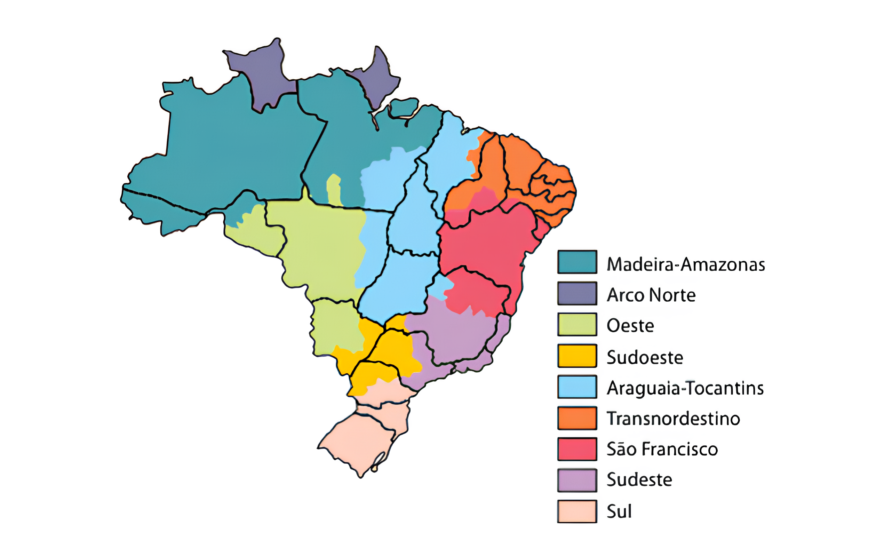

Vídeo sobre as disputas geopolíticas dos minerais críticos

Área de escavação com equipamentos. Fonte: https://unsplash.com/pt-br/fotografias/fotografia-aerea-de-caminhoes-basculantes-EN1tF2EG-50
 Área de escavação com equipamentos.
Fonte: https://unsplash.com/pt-br/fotografias/fotografia-aerea-de-caminhoes-basculantes-EN1tF2EG-50
Área de escavação com equipamentos.
Fonte: https://unsplash.com/pt-br/fotografias/fotografia-aerea-de-caminhoes-basculantes-EN1tF2EG-50